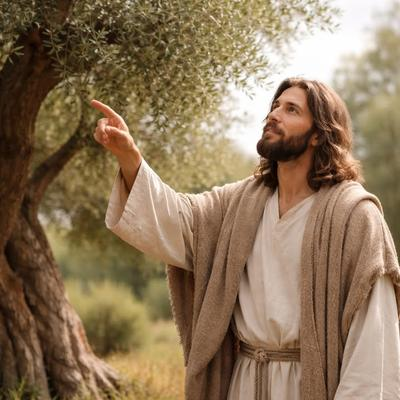

Si alguien afirma: «Yo y el Padre uno somos» (Juan 10:30), se pensaría que comparte con el Creador del universo hasta los conocimientos más profundos sobre la creación. Incluyendo, por ejemplo, sobre las plantas. Pero cuando examinamos ciertas escenas evangélicas, la imagen que emerge no es la de alguien con conocimientos divinos de botánica, sino la de un predicador rural del siglo I usando comparaciones populares, pero nada precisas. Y para ilustrar lo que decimos, basta revisar los episodios de la semilla de mostaza, y de la higuera que fue maldecida por no tener frutos. Veamos:


En Mateo 13:31-32, Jesús dice que «el Reino de los Cielos» es como un grano de mostaza: «la más pequeña de todas las semillas… pero cuando ha crecido, es la mayor de las hortalizas y se hace árbol…»
Y aunque esto suena poético, es científicamente inaceptable. ¿De qué mostaza estamos hablando? Muy probablemente era Brassica nigra (mostaza negra), común en el Mediterráneo y el Cercano Oriente. Veamos cuáles son sus características: se trata de una planta herbácea anual, no leñosa, que puede alcanzar entre 1.5 y 3 metros, y que produce semillas de aproximadamente 1–2 mm de diámetro. Ciertamente pequeña, pero no la más pequeña del universo vegetal, ni hoy, ni en el siglo I.
Toda persona con conocimientos de botánica sabe que las semillas más pequeñas son las de las orquídeas epífitas, que miden alrededor de 0.05 mm. Son literalmente como polvo. En cambio una semilla de mostaza, es entre 20 y 40 veces más grande en longitud, y miles de veces más pesada. Por supuesto, alguien podría decir: «Bueno, es que quizás era la más pequeña que la gente de aquella época y lugar conocía». Pero entonces estamos ante un conocimiento agrícola popular, no ante el conocimiento omnisciente de un ser divino, creador o cocreador de todas las cosas. Si Jesús afirmaba ser «uno con el Padre», tuvo que ser también el diseñador de las orquídeas microscópicas, y ese detalle sobre las semillas no debería escapársele.
Pero sigamos analizando el texto bíblico: ¿se convierte la mostaza en un árbol? Aquí esto se pone interesante, porque resulta que la mostaza no desarrolla tronco leñoso, no es perenne, ni puede considerarse estructuralmente un árbol. De hecho, carece de la rigidez de un árbol verdadero. Puede parecer un arbusto alto, y en el lenguaje antiguo, la palabra «árbol» podría haberse usado de manera flexible para cualquier planta grande. Pero desde el punto de vista botánico, decir que la mostaza «se hace árbol» es una exageración retórica. ¿Poética? Sí. ¿Exacta? No. ¿La mostaza es botánicamente una planta herbácea anual? Sí. ¿Una planta comestible que se cultiva en las huertas, lo que es la definición de hortaliza? Sí. Pero no es un árbol.
¿Y sobre las aves haciendo nidos en sus ramas? Por supuesto que las aves pueden posarse en plantas altas, pero no es común que hagan nidos permanentes estructurados en una planta herbácea anual que carece de estructura leñosa firme. Una cosa es usar la imagen simbólica del refugio, pero otra es describir un comportamiento típico de aves en un «árbol» que no es árbol.
Y esto no sería escandaloso, si no fuera porque la narración presenta a alguien que se identifica con el Creador del sistema botánico completo. Pero, veamos el otro caso que mencionamos, el episodio de la higuera. En Marcos 11:12-14 (y Mateo 21:18-20), se describe a Jesús con gran hambre, cuando ve a lo lejos una higuera. Y se acerca con la intención de comer de sus frutos, pero no encuentra nada. ¿No es extraño para un ser omnisciente que no necesitaba ni acercarse para saber lo que pasaba?
Pero aquí viene lo peor. Resulta que Jesús, furioso y hambriento, maldice a la planta. Esto, a pesar de que el texto aclara algo crucial: «no era tiempo de higos». Así que detengámonos en esto: ¿cuándo dan fruto las higueras en Medio Oriente? La higuera común (Ficus carica) produce brevas a finales de primavera, es decir, entre verano y principios de otoño. Y en la región de Judea, la temporada principal va aproximadamente de junio a septiembre.
Pues bien, resulta que el episodio del Jesús hambriento y furioso con la higuera ocurre durante la Pascua judía, es decir, en marzo o abril. Y desde el conocimiento de la botánica, definitivamente no era la temporada, algo que el propio texto reconoce. Pero surge entonces una pregunta embarazosa: ¿Cómo es posible que alguien nacido y criado en esa región, no supiera que no era tiempo de higos? Más aún: ¿cómo es posible que alguien que afirma unidad ontológica con el Diseñador del ciclo reproductivo del Ficus carica, se sorprenda de que no tuviera frutos en esa temporada?
Y, bueno, aquí el contraste es interesante: se trata de un personaje que multiplica panes y peces para multitudes, que convierte agua en vino y que camina sobre el agua; pero que se descontrola emocionalmente ante una higuera que no produce frutos porque no es su temporada. Y curiosamente, en lugar de crear alimento —lo cual ya había hecho antes—, opta por maldecir una planta por no violar sus propios ciclos biológicos.
Pero más contrastante es que el mismo Jesús, según Mateo 6:26, enseñó: «Mirad las aves del cielo, que no siembran, ni siegan… y vuestro Padre celestial las alimenta.» Sin duda un hermoso mensaje de confianza, pero cuando el propio predicador tiene hambre, no produce alimento para él milagrosamente. Lo que hace es descargar su frustración sobre una inocente higuera, cuyo único «pecado» fue obedecer fielmente su fisiología. La ironía es casi literaria.
Así que digamos en conclusión que Jesús, en caso de haber existido, refleja solamente el conocimiento de un campesino común del siglo I, que usa hipérboles populares, emplea categorías flexibles («árbol»), y desconoce (o ignora) detalles biológicos básicos. Y que además reacciona de forma emocional ante procesos naturales. Y esto es exactamente lo que se esperaría de un maestro judío carismático de su tiempo, pero no precisamente lo que esperaríamos del arquitecto del ADN vegetal, del diseñador de la fotosíntesis y del programador molecular de las semillas de orquídea.
Es decir, si estos textos pretendían mostrar omnisciencia botánica, el resultado fue ridículo. Pero si pretendían enseñar lecciones espirituales usando imágenes rurales, cumplieron su función narrativa. Sin embargo, desde el punto de vista científico, el «uno con el Padre» no parece haber aprobado siquiera un curso introductorio de fisiología vegetal.
Y con respecto a la pobre higuera, simplemente, estaba haciendo lo que las higueras hacen desde hace millones de años: dar fruto cuando corresponde.
[Godless Freeman]
Comentarios
Comments powered by Disqus